Isinya harus sesuai dengan data yang diisi di formulir, dan sudah ditandatangani lengkap.
2
SATU EMAIL, SATU PERAN
Dalam satu permohonan, jangan pakai alamat email yang sama untuk lebih dari satu peran.
3
PENGURUS BARU, EMAIL BARU
Kalau ini pengajuan ulang karena pergantian pengurus, email untuk peran itu harus berbeda dari yang sudah terdaftar.
Kalau salah satu tidak terpenuhi, permohonan dikembalikan.
Pak Joko memeriksa permohonan perubahan akses DSSY.
PERMOHONAN DIKEMBALIKAN
Pak Joko menulis alasannya di surat, lalu mengecapnya. Permohonan tidak diproses.
PARTY RESMI TERDAFTAR
Akses lingkungan diperbarui — Sheet Maker dan Sheet Checker sekarang mengenali ketiganya.
GULUNGAN AJAIB KINI BOLEH DISENTUH
PROSES 2 · MATA YANG MEMBACA
Malam. Piring sudah dicuci, rumah sudah sepi.
Di sinilah pekerjaan ini sebenarnya terjadi — di meja dapur, setelah semua urusan lain selesai.
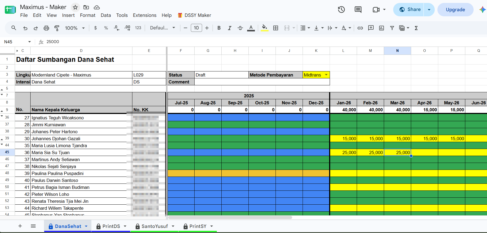
Empat sheet di bawah: DanaSehat · PrintDS · SantoYusuf · PrintSY. Di atas ada Status, Comment, dan dropdown Metode Pembayaran. Yang boleh diisi hanya sel kuning dan coklat — sel lain terkunci.
Baru setelah yakin, tangannya bergerak ke menu: 🎁 DSSY Maker → 🚀 Ajukan Pengecekan.
Semuanya sudah masuk. Sudah saya cocokkan sekali lagi dengan kartu kuningnya. Tidak ada yang tertinggal.
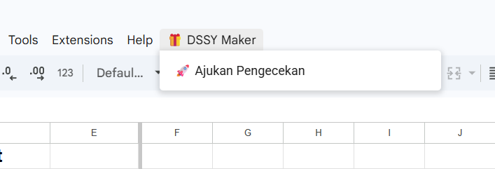
⚠ RINTANGAN 1 · GERBANG IZIN
Pertama kali menu itu disentuh, Google menghadang dengan beberapa pertanyaan.
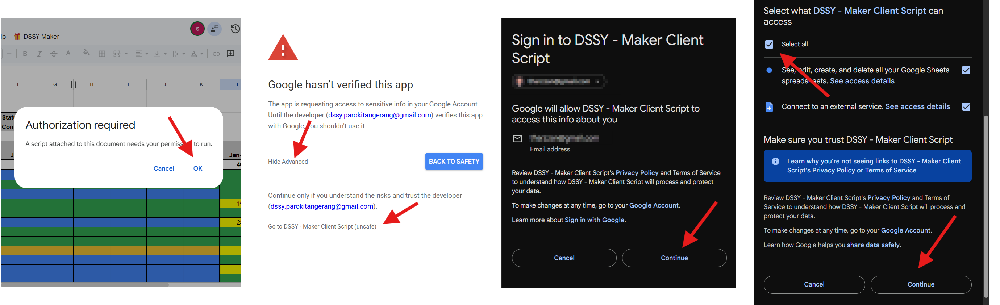
1Authorization required → OK
2Google hasn’t verified this app → Advanced
3Go to DSSY … (unsafe) → Continue
4CENTANG "Select all" → Continue
Kenapa tertulis "unsafe" tapi tetap aman: script ini dibuat sendiri oleh Tim IT Gereja (dssy.parokitangerang@gmail.com), bukan aplikasi publik yang didaftarkan ke Google. Izin yang diminta pun hanya untuk alat yang memang dipakai.
DUA DIALOG TERAKHIR
Yang muncul setelah 🚀 Ajukan Pengecekan ditekan.
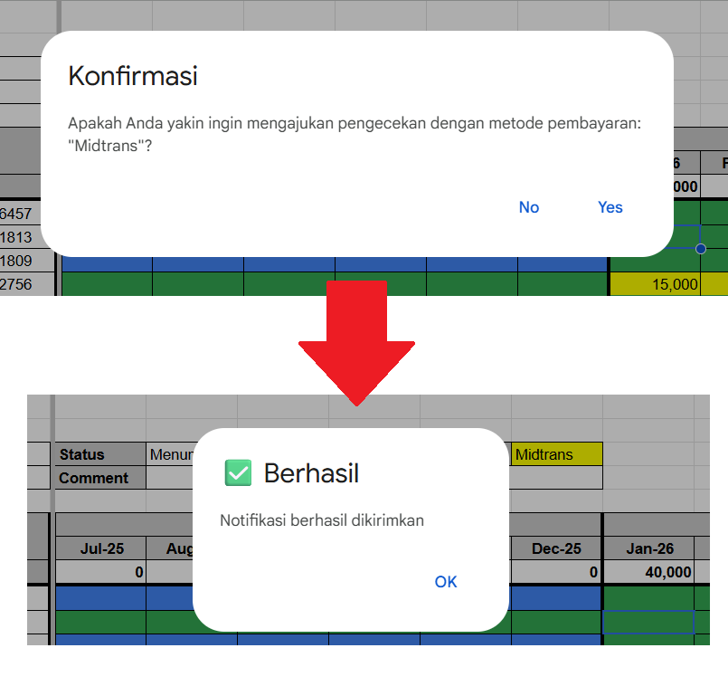
1
KONFIRMASI METODE PEMBAYARAN
Dialognya menyebutkan metode yang tadi Anda pilih. Klik Yes untuk lanjut. Klik No kalau metodenya ternyata keliru — Anda kembali ke sheet dan masih bisa menggantinya.
2
NOTIFIKASI BERHASIL
"Notifikasi berhasil dikirimkan." Klik OK. Kalau pesan ini sudah muncul, pekerjaan Anda sudah selesai.
GULUNGAN TERKUNCI
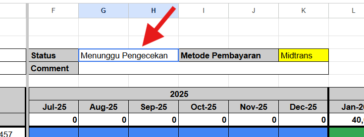
SHEET TERKUNCI
Sheet Dana Sehat dan Santo Yusuf otomatis terkunci. Bu Marni tidak bisa mengubah apa pun lagi.
STATUS BERUBAH
Kolom Status yang tadinya "Draft" kini bertuliskan "Menunggu Pengecekan".
MERPATI TERBANG
Bu Cicih menerima email "File DSSY siap diperiksa". Giliran berpindah tangan.
PROSES 3 · TANGAN YANG MENIMBANG
Pagi hari di teras rumah Bu Cicih.
Seekor merpati pos mendarat di pagar. Surat itu untuknya.
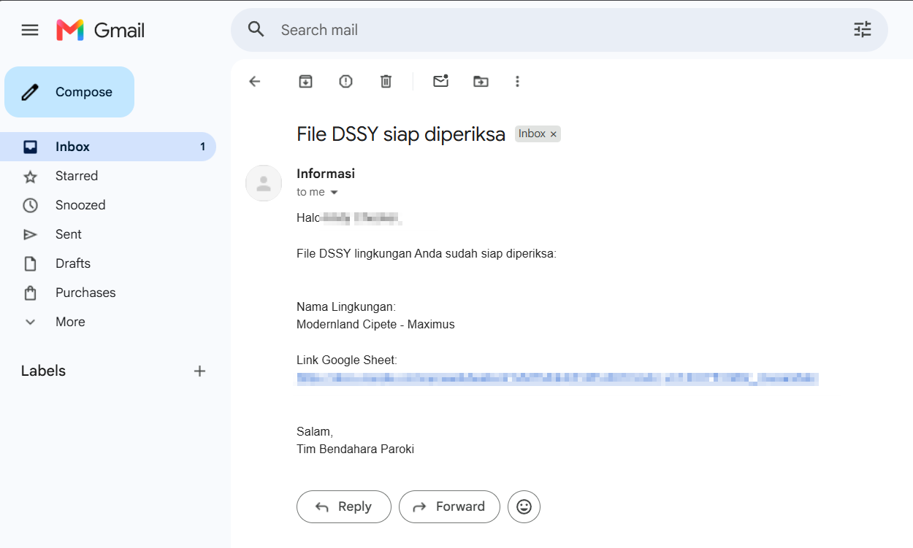
Pengirimnya info@santamaria.or.id. Di dalamnya ada nama lingkungan dan link Google Sheet — itulah Sheet Checker.
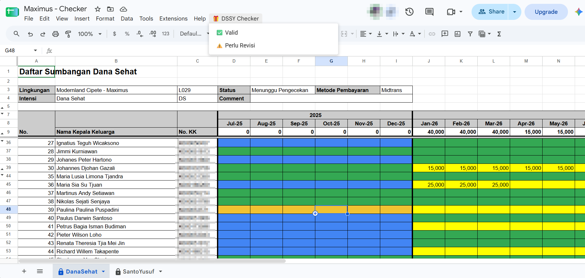
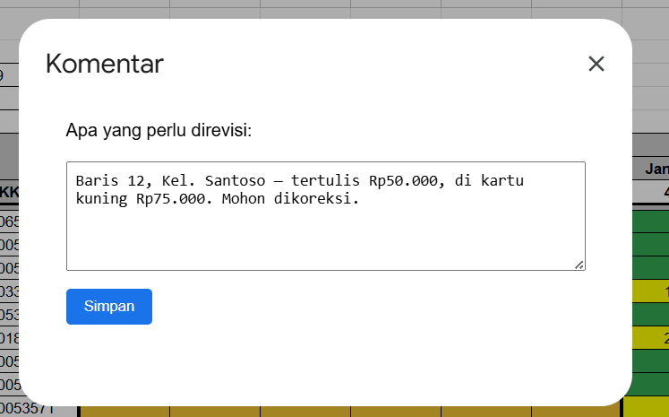
Kartu kuning fisik ada di sebelah kiri laptop. Bu Cicih menyandingkan keduanya, baris demi baris.
MERPATI TERBANG BALIK KE BU MARNI
Komentar Bu Cicih pulang ke Bu Marni. Status kembali ke "Draft", dan sheet-nya terbuka lagi untuk diperbaiki.
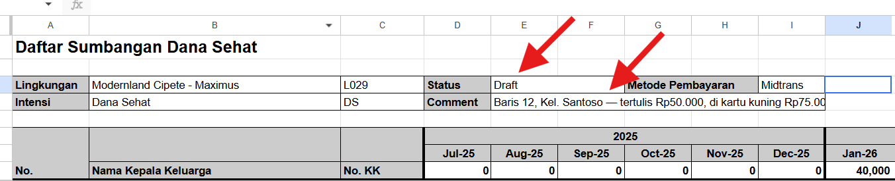
MERPATI TERBANG KE PAK RUSLI
STATUS LAPORAN
Menunggu Pengecekan▶VALID
Merpati lepas dari teras Bu Cicih, melintasi atap-atap Desa 2026 Cemara, menuju rumah Pak Rusli.
⚠ RINTANGAN 2 · LANGKAHMU SUDAH TERCATAT
Bu Cicih menekan tombol di menu 🎁 DSSY Checker untuk kedua kalinya.
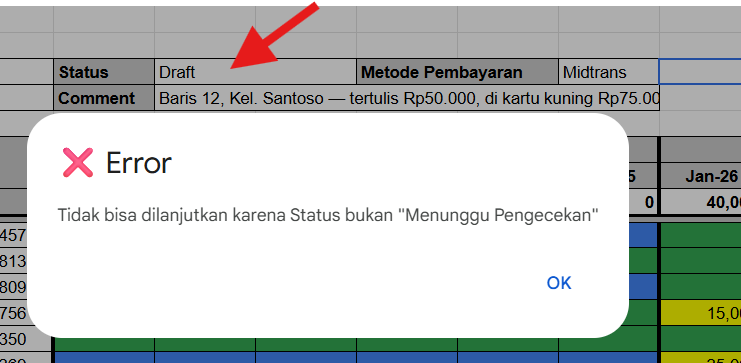
?
APA YANG TERJADI
Statusnya sudah bukan "Menunggu Pengecekan" lagi. Artinya tombol tadi sudah berhasil ditekan — langkah Bu Cicih sudah tercatat.
Bu Marni bisa menerima pesan serupa kalau ia menekan 🚀 Ajukan Pengecekan padahal statusnya bukan lagi "Draft". Bentuk pesannya sama persis — yang berbeda hanya nama status yang disebut.
PROSES 4 · KUNCI YANG MEMBUKA
Sore hari di beranda Pak Rusli.
Yang tadi terbang dari teras Bu Cicih, sekarang tiba. Ia mengangkat kepala dari bukunya.
KUNCI YANG MEMBUKA
Email notifikasi dan tombol Rilis Laporan — boleh dibuka dari HP.
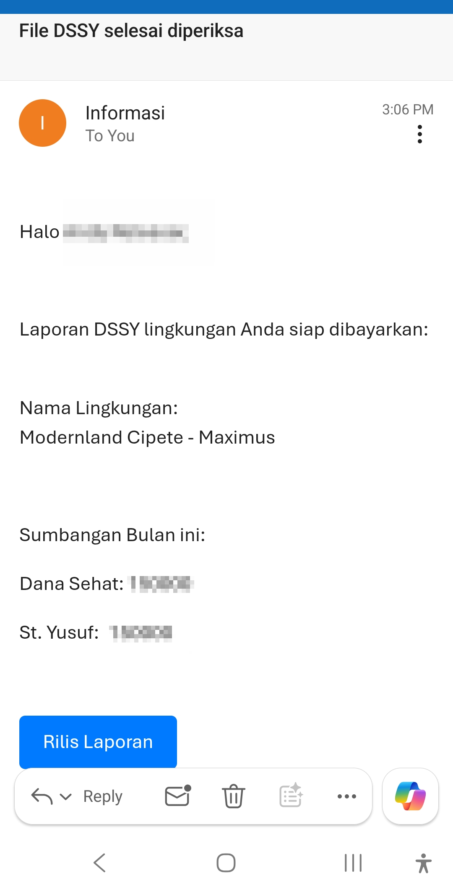
Email di HP Pak Rusli
DIBACA DULU, BARU DITEKAN
Angka Dana Sehat dan St. Yusuf di email itu dibaca dulu. Tanggung jawab terakhir ada di tangan Pak Rusli.
▼tekan "Rilis Laporan"
HALAMAN KONFIRMASI
Browser di HP akan terbuka. "Terima Kasih!" — link pembayaran sedang dibuat dan akan dikirim ke Maker.
Kalau metode lingkungan Anda Cash, kalimatnya berbeda: Maker akan menerima notifikasi untuk membayar tunai ke kasir Bendahara Paroki.
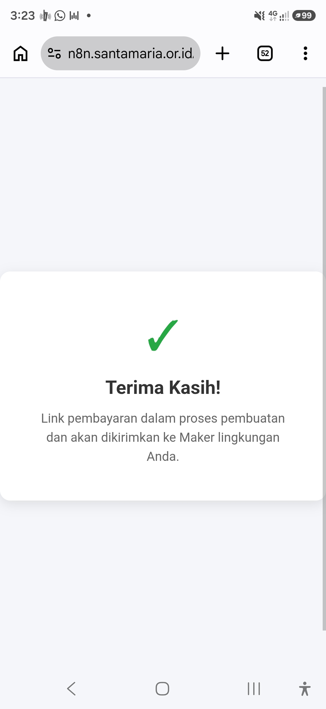
Sesudah tombol ditekan
KALAU LINK-NYA BERMASALAH
Dua pesan gagal yang mungkin muncul sesudah tombol Rilis Laporan ditekan.
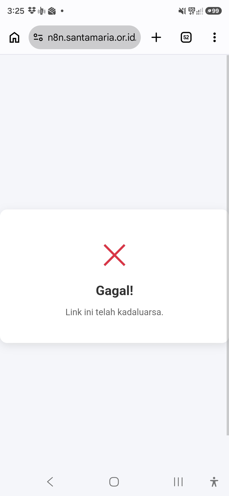
"LINK INI TELAH KADALUARSA"
Link-nya sudah pernah dipakai, atau laporan lingkungan Anda sudah bukan berstatus "Valid" lagi. Tidak perlu diklik ulang — pekerjaannya sudah jalan.
"LINK INI TIDAK VALID"
Link-nya ter-copy sebagian, atau dibuka bukan dari tombol di email. Kembali ke emailnya, lalu klik langsung tombol "Rilis Laporan" — jangan menyalin link-nya manual.
Kalau menurut Anda kedua pesan ini keliru, hubungi Staf Bendahara Gereja.
PROSES 5 · DUA JALAN PEMBAYARAN
Dari sini jalannya bercabang dua, tergantung Metode Pembayaran yang Anda pilih.
JALAN MIDTRANS
JALAN CASH
Sebelum berangkat membayar, laporannya dicetak dulu — dua lembar: PrintDS dan PrintSY.
!
▲ KLIK PRINTERNYA
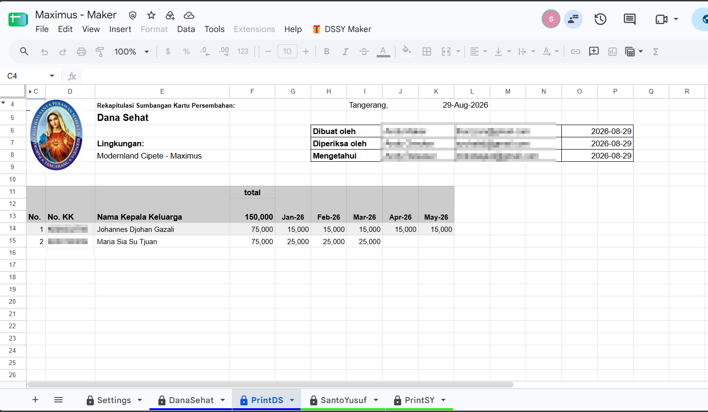
Di kertas itu sudah tercetak Dibuat oleh, Diperiksa oleh, dan Mengetahui — lengkap dengan tanggalnya. Inilah yang menggantikan tanda tangan basah mereka bertiga.
Rekapitulasi ini baru muncul setelah Pak Rusli menekan "Rilis Laporan". Sebelum dirilis, sheet PrintDS dan PrintSY masih kosong — tidak ada yang bisa dicetak.
LAYAR MIDTRANS — TAMPILAN SEBENARNYA
1Nama, nomor telepon, dan e-mail Maker, serta jumlahnya sudah terisi sendiri. Periksa sebentar, lalu tekan Next.
2Pilih metodenya: QRIS atau Virtual Account (BCA, Mandiri, BNI, BRI, dan lainnya).
3Kalau memilih Virtual Account, keluar nomor VA. Nomor inilah yang dibawa ke ATM atau m-banking.
Bu Marni membukanya dari HP, lewat tombol Link Pembayaran di email.
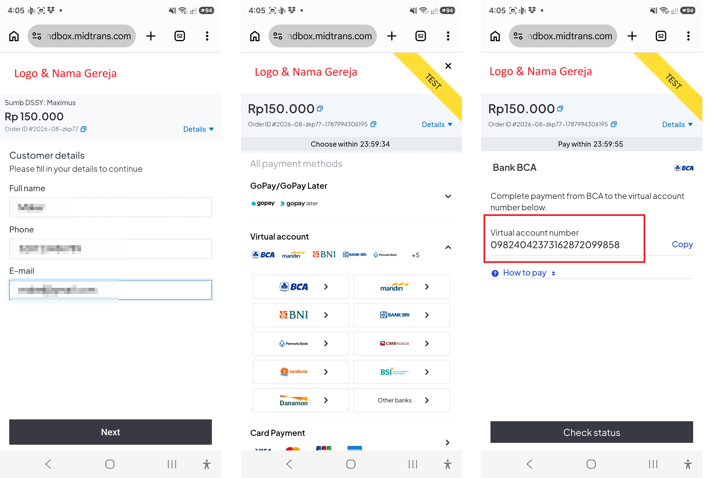
Nomor Virtual Account tadi dimasukkan di sini.
VIRTUAL ACCOUNT
0982 4042 3731 6287 2099 858
Rp 150.000
Tidak harus lewat ATM. m-banking atau internet banking juga bisa — yang penting nomor VA dan nominalnya sama.
Sebelum berangkat membayar, laporannya dicetak dulu — dua lembar: PrintDS dan PrintSY.
!
▲ KLIK PRINTERNYA
Di kertas itu sudah tercetak Dibuat oleh, Diperiksa oleh, dan Mengetahui — lengkap dengan tanggalnya. Inilah yang menggantikan tanda tangan basah mereka bertiga.
Langkah ini wajib di kedua jalan. Lewat Midtrans maupun tunai, laporannya tetap dicetak dulu — baru berangkat.
Jalan tunai: uangnya diserahkan langsung ke kasir Bendahara Gereja.
KASIR
1Bawa PrintDS dan PrintSY yang tadi dicetak.
2Serahkan uangnya sesuai total yang tertera di lembar cetak itu.
3Pak Joko menghitung, lalu mencatat pembayaran itu ke dalam sistem.
Konfirmasinya tidak keluar seketika seperti jalan Midtrans — email pemberitahuan baru terkirim setelah Pak Joko mencatat pembayarannya.
PEMBAYARAN SUMBANGAN DITERIMA
Ketiganya menerima e-mail yang sama persis.
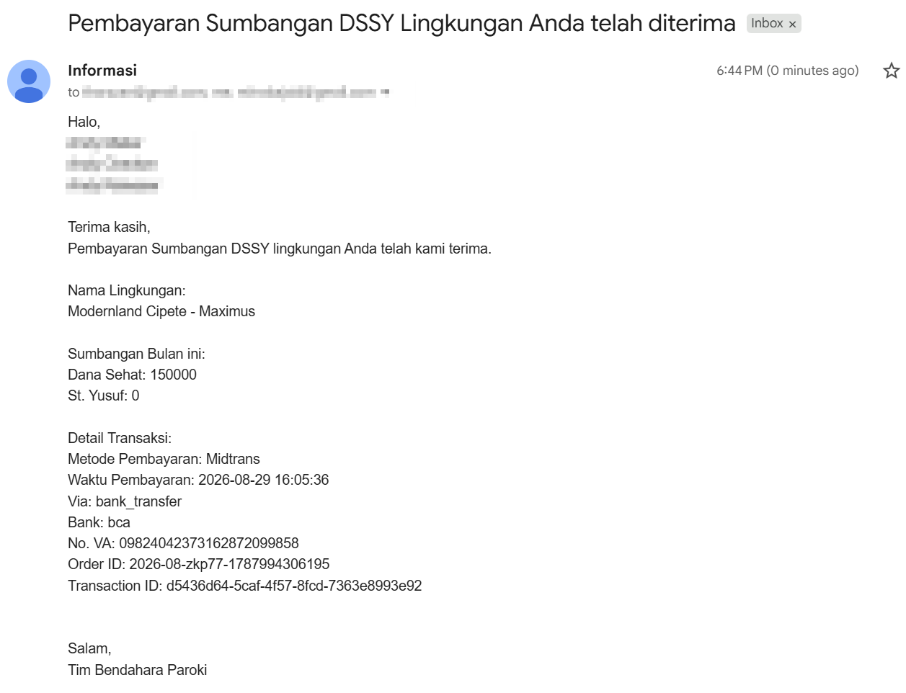
Isinya: total Dana Sehat dan St. Yusuf bulan ini, ditambah detail transaksinya — metode, waktu, bank, No. VA, Order ID, dan Transaction ID.
Bulan berikutnya, lembar kerjanya sudah bersih lagi, siap diisi dari awal.
DanaSehatPrintDSSantoYusufPrintSY
▲ KLIK UNTUK MELIHAT APA YANG BERUBAH
TELAH DIPERBARUI!
Template bulan depan otomatis tercipta. Tidak perlu menunggu bendahara paroki menyiapkannya satu per satu, tidak perlu meminta. Inilah yang berubah dari Era 3.
DESA 2026 CEMARA
Klik ketiga umat.
Umat yang membutuhkan terbantu karena seluruh umat bergotong-royong.
1 MINGGU KEMUDIAN
Tujuh matahari terbit, tujuh matahari terbenam.
Bu Marni tidak menunggu sampai malam, tidak menunggu diingatkan. Gulungan Ajaib sudah terbuka, dan ia mulai mengisi.
Isiannya selesai. Tapi begitu tombol Ajukan Pengecekan ditekan, layarnya menolak.
▲ KLIK UNTUK MEMBACA PESANNYA
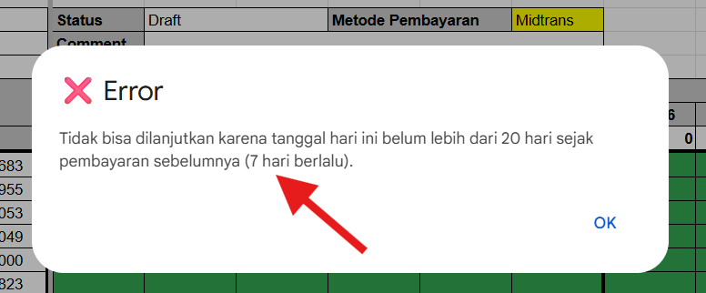
Ini bukan kerusakan, dan Bu Marni tidak salah apa pun. Ia justru terlalu rajin.
Sistemnya punya irama sendiri: jaraknya minimal 20 hari dari pembayaran sebelumnya. Pesannya bahkan menyebutkan sudah berapa hari berlalu. Yang perlu dilakukan cuma menunggu.
BACA SOP
Panduan lengkapnya, langkah demi langkah, bisa dibuka kapan saja.
TANYA DESY
Tanyakan langsung apa pun yang membingungkan, dengan bahasa Anda sendiri.
KOLOSE 3:23
Semua ini adalah untuk kemuliaan Allah dan menjaga amanah kepercayaan umat yang telah dititipkan kepada kita semua.